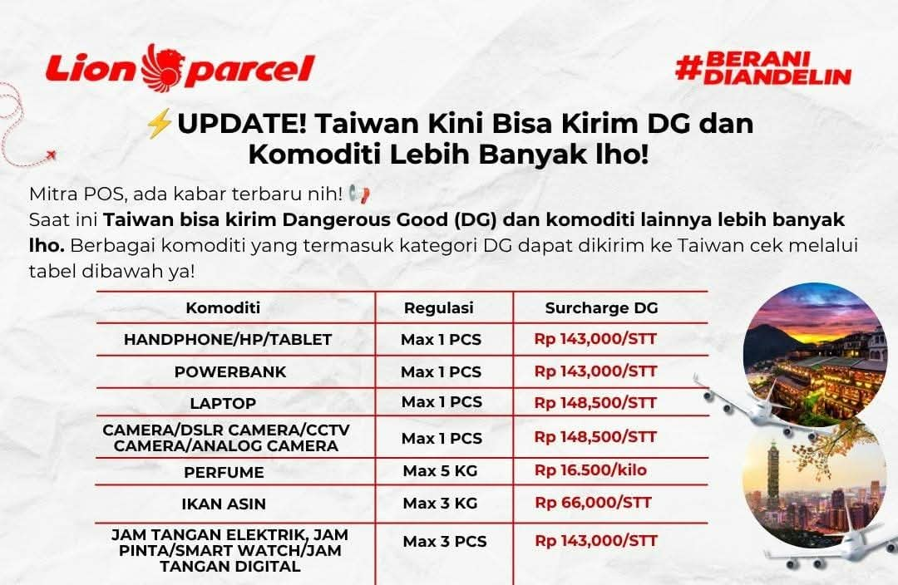

Update! Kirim HP, Powerbank, Laptop dan Komoditi Lainnya ke Taiwan via Lion Parcel

Ada kabar menarik bagi kamu yang ingin mengirim barang dari Indonesia ke Taiwan! Berdasarkan pembaruan ketentuan pengiriman yang diterima agen, kini tersedia pilihan pengiriman untuk sejumlah komoditi yang membutuhkan penanganan khusus atau masuk kategori Dangerous Goods (DG).
Beberapa jenis barang yang tercantum dalam ketentuan terbaru antara lain handphone, tablet, powerbank, laptop, kamera, parfum, hingga ikan asin. Masing-masing memiliki batas jumlah atau berat serta biaya tambahan yang berbeda.
Informasi ini tentu menarik bagi masyarakat Indonesia yang tinggal di Taiwan maupun keluarga di tanah air yang ingin mengirimkan barang kebutuhan pribadi kepada kerabatnya.
Bagi pelanggan di Bandung, Rancaekek, Cicalengka, dan sekitarnya, pengiriman dapat dikonsultasikan melalui Lion Parcel Bandung POS101 Nanjungmekar sebelum paket diproses.
Konsultasi Pengiriman ke Taiwan
Mau mengirim HP, powerbank, laptop, parfum atau barang lainnya ke Taiwan? Tanyakan ketentuan dan estimasi biaya terlebih dahulu kepada admin kami.
💬 Chat WhatsApp 0851-8309-0486Apa Itu Dangerous Goods (DG) dalam Pengiriman Internasional?
Dangerous Goods atau DG merupakan istilah untuk barang yang memiliki karakteristik tertentu sehingga membutuhkan penanganan khusus ketika diangkut melalui jalur transportasi.
Contohnya adalah barang yang mengandung baterai lithium, cairan tertentu, bahan mudah terbakar, atau material lain yang memiliki persyaratan keselamatan khusus.
Dalam pengiriman internasional, barang yang termasuk kategori tersebut tidak bisa diperlakukan sama seperti paket biasa. Ada ketentuan mengenai jenis barang, jumlah, kemasan, deklarasi, serta metode pengangkutan yang harus dipenuhi.
Karena itu, meskipun suatu komoditi sudah tercantum dalam daftar penerimaan untuk tujuan Taiwan, bukan berarti seluruh jenis dan jumlah barang otomatis dapat dikirim.
Setiap paket tetap harus melalui pemeriksaan berdasarkan ketentuan layanan dan persyaratan yang berlaku.
Daftar Komoditi dan Surcharge DG Pengiriman ke Taiwan
Berikut daftar komoditi, batas kuota, dan biaya tambahan DG berdasarkan informasi ketentuan pengiriman yang diterima oleh agen.
| Komoditi | Batas Kuota | Surcharge |
|---|---|---|
| Handphone / HP / Tablet | Maksimal 1 PCS | Rp143.000 / STT |
| Powerbank | Maksimal 1 PCS | Rp143.000 / STT |
| Laptop | Maksimal 1 PCS | Rp148.500 / STT |
| Kamera DSLR / CCTV / Analog Camera | Maksimal 1 PCS | Rp148.500 / STT |
| Perfume / Parfum | Maksimal 5 KG | Rp16.500 / KG |
| Ikan Asin | Maksimal 3 KG | Rp66.000 / STT |
| Jam Tangan Elektrik / Smartwatch / Jam Digital | Maksimal 3 PCS | Rp143.000 / STT |
Catatan harga: Harga surcharge sewaktu-waktu dapat berubah mengikuti ketentuan operasional yang berlaku. Silakan konfirmasi kembali kepada Lion Parcel Bandung POS101 sebelum melakukan pengiriman.
BARANG DG HARUS DIKIRIM TERPISAH DAN TIDAK BOLEH DISATUKAN DENGAN PAKET LAIN.
*STT mengikuti istilah satuan transaksi pada ketentuan tarif yang diterima agen. Tarif dan kuota di atas merupakan informasi yang diberikan untuk artikel ini, bukan jaminan penerimaan barang. Konfirmasikan kembali tarif dan ketentuan terbaru sebelum booking.
Perhatian sebelum mengirim:
Biaya surcharge merupakan biaya tambahan sesuai kategori komoditi, bukan otomatis keseluruhan ongkos kirim. Tarif dasar pengiriman, biaya lain jika ada, serta penerimaan barang perlu dikonfirmasi terlebih dahulu.
Penjelasan Ketentuan Pengiriman Setiap Komoditi ke Taiwan
1. Kirim Handphone, HP dan Tablet ke Taiwan
Handphone dan tablet merupakan perangkat elektronik yang umumnya menggunakan baterai lithium. Karena karakteristik baterainya, pengiriman perangkat ini membutuhkan penanganan sesuai ketentuan keselamatan transportasi.
Berdasarkan daftar kuota yang diberikan, handphone, HP, dan tablet memiliki batas maksimal 1 PCS dengan surcharge DG sebesar Rp143.000 per STT.
Sebelum mengirim, siapkan informasi mengenai merek, jenis perangkat, kondisi barang, dan kelengkapan kemasan. Sampaikan kepada petugas bahwa paket berisi perangkat elektronik.
2. Kirim Powerbank ke Taiwan
Powerbank termasuk barang yang membutuhkan perhatian khusus karena menggunakan baterai lithium sebagai sumber penyimpanan energi.
Dalam ketentuan kuota yang diberikan, pengiriman powerbank tujuan Taiwan dibatasi maksimal 1 PCS dengan surcharge DG sebesar Rp143.000 per STT.
Jangan menyamakan ketentuan powerbank dengan charger biasa. Keduanya memiliki karakteristik berbeda. Pastikan barang yang akan dikirim sudah diinformasikan secara jelas kepada petugas.
3. Kirim Laptop ke Taiwan
Laptop juga termasuk perangkat elektronik yang umumnya memiliki baterai lithium internal. Oleh karena itu, pengirimannya perlu mengikuti ketentuan khusus.
Berdasarkan informasi kuota yang diterima, laptop memiliki batas maksimal 1 PCS dengan surcharge DG sebesar Rp148.500 per STT.
Pastikan laptop dikemas dengan aman menggunakan pelindung yang sesuai untuk melindungi layar, bodi, dan komponen selama proses pengangkutan.
4. Kirim Kamera DSLR, CCTV dan Kamera Analog
Perangkat kamera juga tercantum dalam daftar komoditi yang memiliki ketentuan khusus untuk pengiriman ke Taiwan.
Jenis kamera yang disebutkan meliputi DSLR Camera, CCTV Camera, dan Analog Camera dengan batas maksimal 1 PCS serta surcharge DG sebesar Rp148.500 per STT.
Jika kamera menggunakan baterai atau memiliki aksesori tambahan, informasikan seluruh isi paket saat konsultasi agar petugas dapat memeriksa ketentuan yang berlaku.
5. Kirim Parfum ke Taiwan
Parfum termasuk produk yang perlu mendapatkan perhatian khusus dalam pengiriman karena sebagian produk mengandung alkohol atau bahan yang mudah terbakar.
Berdasarkan daftar ketentuan yang diberikan, parfum memiliki batas maksimal 5 KG dengan surcharge sebesar Rp16.500 per kilogram.
Pastikan jenis parfum dan kemasannya sesuai dengan persyaratan penerimaan. Jangan langsung membawa parfum dalam jumlah banyak tanpa melakukan konfirmasi terlebih dahulu.
6. Kirim Ikan Asin ke Taiwan
Selain perangkat elektronik dan parfum, ikan asin juga tercantum dalam daftar komoditi yang dapat dikonsultasikan untuk pengiriman ke Taiwan.
Berdasarkan kuota yang diberikan, ikan asin memiliki batas maksimal 3 KG dengan biaya tambahan sebesar Rp66.000 per STT.
Namun, pengiriman produk makanan dan hasil perikanan tetap perlu memperhatikan ketentuan impor negara tujuan, persyaratan karantina jika berlaku, kondisi produk, serta standar kemasan.
Pastikan produk sudah mendapatkan konfirmasi penerimaan sebelum dikirimkan. Jangan menganggap bahwa seluruh jenis makanan otomatis dapat masuk ke Taiwan.
7. Kirim Smartwatch dan Jam Tangan Digital ke Taiwan
Jam tangan elektrik, smartwatch, dan jam tangan digital juga termasuk komoditi yang tercantum dalam daftar ketentuan pengiriman.
Batas kuota yang diberikan adalah maksimal 3 PCS dengan surcharge DG sebesar Rp143.000 per STT.
Beberapa jenis smartwatch memiliki baterai lithium internal sehingga perlu diperiksa berdasarkan ketentuan pengangkutan perangkat elektronik.
Mengapa Pengiriman Barang DG Memiliki Biaya Tambahan?
Mungkin ada pelanggan yang bertanya mengapa pengiriman HP, powerbank, laptop, atau parfum memiliki biaya tambahan dibandingkan paket reguler.
Hal ini berkaitan dengan karakteristik barang dan persyaratan penanganan selama proses pengangkutan.
Barang tertentu memerlukan pemeriksaan, pengelompokan, deklarasi, serta penanganan khusus agar sesuai dengan ketentuan keselamatan pengiriman.
Karena itulah terdapat komponen biaya tambahan yang dikenal sebagai Surcharge DG pada komoditi tertentu.
Besarnya biaya tambahan dapat berbeda tergantung jenis barang dan ketentuan layanan. Selain surcharge, pelanggan juga perlu memperhitungkan ongkos kirim dasar serta biaya lain yang mungkin berlaku.
Hal yang Harus Dipersiapkan Sebelum Mengirim Barang ke Taiwan
Supaya proses pengiriman tidak mengalami kendala, sebaiknya lakukan beberapa persiapan berikut sebelum datang ke agen Lion Parcel.
- Pastikan jenis barang. Informasikan secara jelas apakah barang berupa HP, powerbank, laptop, kamera, parfum, atau makanan.
- Periksa jumlah dan berat. Sesuaikan jumlah barang dengan batas kuota yang berlaku.
- Siapkan data penerima. Pastikan nama, nomor telepon, dan alamat tujuan Taiwan sudah lengkap.
- Jelaskan isi paket dengan jujur. Jangan menyembunyikan barang yang termasuk kategori DG atau komoditi khusus.
- Gunakan kemasan yang sesuai. Ikuti petunjuk pengemasan dari petugas berdasarkan karakteristik barang.
- Konfirmasi tarif dan penerimaan. Pastikan kuota, surcharge, biaya pengiriman dasar, dan persyaratan barang sudah jelas sebelum melakukan transaksi.
Ingat!
Jangan mengirimkan barang yang belum mendapatkan persetujuan penerimaan. Barang yang memiliki baterai, cairan, bahan mudah terbakar, atau persyaratan impor khusus perlu diperiksa terlebih dahulu.
Apakah Tarif Surcharge DG Sudah Termasuk Ongkos Kirim ke Taiwan?
Tidak selalu. Surcharge DG merupakan komponen biaya tambahan untuk komoditi tertentu dan perlu dibedakan dari tarif dasar pengiriman internasional.
Sebagai contoh, jika pelanggan ingin mengirim satu unit handphone, maka berdasarkan tabel di atas terdapat surcharge DG sebesar Rp143.000 per STT.
Namun, total pembayaran tetap perlu dihitung berdasarkan ongkos kirim dasar, biaya tambahan yang berlaku, serta ketentuan transaksi pada saat booking.
Oleh karena itu, pelanggan disarankan melakukan pengecekan tarif terlebih dahulu agar mengetahui estimasi total biaya sebelum paket diproses.
Layanan Konsultasi Pengiriman Taiwan di Lion Parcel Bandung POS101
Bagi masyarakat Bandung Timur dan sekitarnya, pengiriman barang internasional kini dapat dikonsultasikan melalui Lion Parcel Bandung POS101 Nanjungmekar Rancaekek.
Kami membantu pelanggan memperoleh informasi mengenai pengiriman internasional, termasuk konsultasi jenis barang, persiapan data penerima, estimasi tarif, dan ketentuan komoditi khusus.
Pelanggan yang ingin mengirimkan barang kepada keluarga di Taiwan dapat menghubungi admin terlebih dahulu untuk memastikan barang yang akan dikirim sesuai dengan ketentuan layanan.
Kami melayani konsultasi pengiriman bagi pelanggan dari wilayah:
- Rancaekek dan Nanjungmekar.
- Cicalengka dan sekitarnya.
- Majalaya dan Solokanjeruk.
- Jatinangor dan wilayah sekitarnya.
- Wilayah Bandung Timur lainnya.
Mau Kirim HP, Powerbank atau Parfum ke Taiwan?
Jangan sampai salah informasi mengenai kuota dan biaya tambahan. Konsultasikan jenis barang dan tujuan pengiriman kepada admin Lion Parcel POS101.
💬 Cek Tarif via WhatsApp📍 Lokasi Lion Parcel Bandung POS101 Nanjungmekar
Jl. Raya Barat Cicalengka RT 1 RW 1, Nanjung Mekar, Rancaekek, Kabupaten Bandung, Jawa Barat.
Pertanyaan yang Sering Diajukan tentang Kirim Barang ke Taiwan
1. Apakah sekarang bisa kirim HP ke Taiwan lewat Lion Parcel?
Berdasarkan daftar ketentuan yang diberikan, handphone atau tablet memiliki batas maksimal 1 PCS dengan surcharge DG Rp143.000 per STT. Penerimaan tetap harus dikonfirmasi sebelum booking.
2. Apakah powerbank bisa dikirim ke Taiwan?
Powerbank tercantum dalam daftar komoditi dengan kuota maksimal 1 PCS dan surcharge DG Rp143.000 per STT. Pengiriman mengikuti persyaratan baterai dan keselamatan transportasi.
3. Berapa biaya tambahan kirim laptop ke Taiwan?
Berdasarkan informasi yang diberikan, surcharge DG untuk laptop adalah Rp148.500 per STT, di luar ongkos kirim dasar dan biaya lain jika berlaku.
4. Berapa batas pengiriman parfum ke Taiwan?
Batas yang tercantum adalah maksimal 5 KG dengan surcharge Rp16.500 per KG. Jenis parfum dan kelayakan pengirimannya harus diperiksa terlebih dahulu.
5. Apakah ikan asin bisa dikirim ke Taiwan?
Ikan asin tercantum dalam daftar komoditi dengan batas maksimal 3 KG dan biaya tambahan Rp66.000 per STT. Penerimaan tetap bergantung pada persyaratan impor dan pemeriksaan komoditi pangan di Taiwan.
6. Apakah surcharge DG sudah termasuk ongkos kirim?
Surcharge DG merupakan biaya tambahan. Ongkos kirim dasar dan komponen biaya lainnya perlu dihitung secara terpisah sesuai hasil pengecekan tarif.
7. Apakah semua jenis HP dan powerbank bisa dikirim?
Tidak otomatis. Jenis perangkat, spesifikasi baterai, kondisi barang, kemasan, dan ketentuan pengangkutan harus diperiksa terlebih dahulu.
8. Di mana bisa konsultasi kirim barang ke Taiwan di Rancaekek?
Kamu dapat menghubungi Lion Parcel Bandung POS101 Nanjungmekar melalui WhatsApp 0851-8309-0486 atau datang langsung ke gerai.
Kesimpulan: Pengiriman ke Taiwan Semakin Banyak Pilihannya
Pembaruan ketentuan pengiriman ke Taiwan memberikan pilihan lebih luas bagi pelanggan yang ingin mengirimkan barang tertentu dari Indonesia.
Mulai dari handphone, powerbank, laptop, kamera, parfum, smartwatch, hingga ikan asin, masing-masing memiliki batas kuota dan biaya tambahan sesuai informasi ketentuan yang diberikan.
Hal terpenting adalah memastikan barang memenuhi persyaratan, mengetahui biaya tambahan, dan melakukan konfirmasi sebelum paket dikirimkan.
Untuk kamu yang berada di Bandung, Rancaekek, Cicalengka, dan sekitarnya, Lion Parcel Bandung POS101 siap membantu konsultasi kebutuhan pengiriman internasional tujuan Taiwan.
Nama Agen: Lion Parcel Bandung POS101 Nanjungmekar Rancaekek
Jam Operasional: Senin–Minggu, 08.00–20.00 WIB
Alamat: Jl. Raya Barat Cicalengka RT 1 RW 1, Nanjung Mekar, Rancaekek, Kabupaten Bandung, Jawa Barat.
WhatsApp: 0851-8309-0486
Website: Lion Parcel Bandung POS101